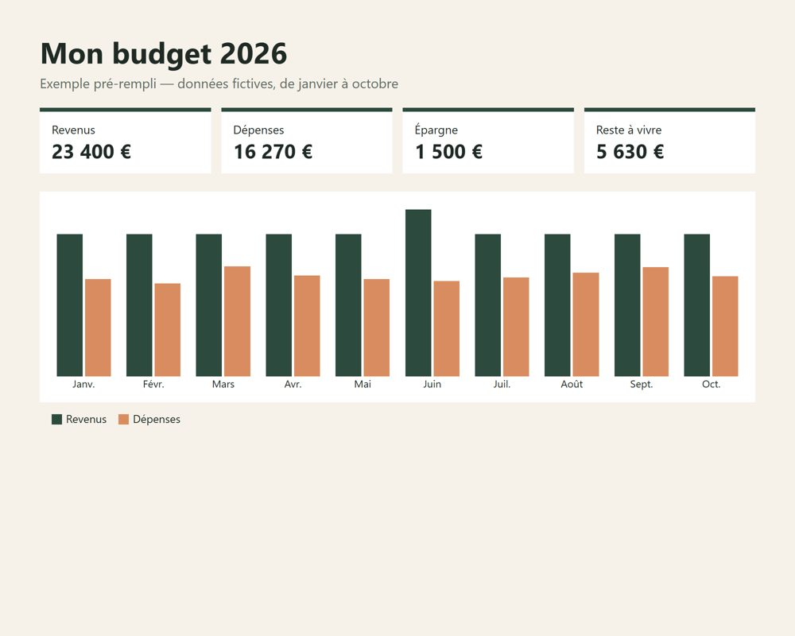
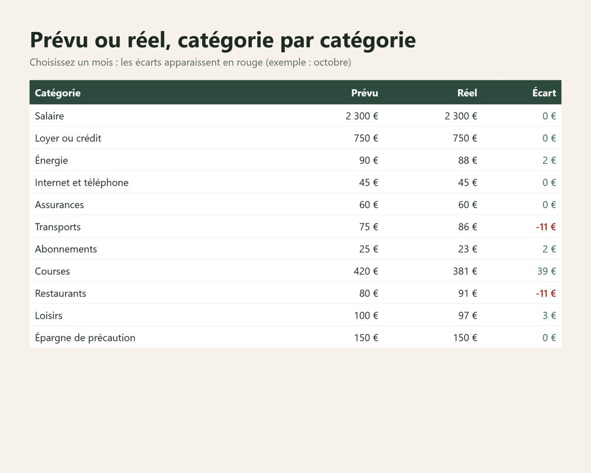
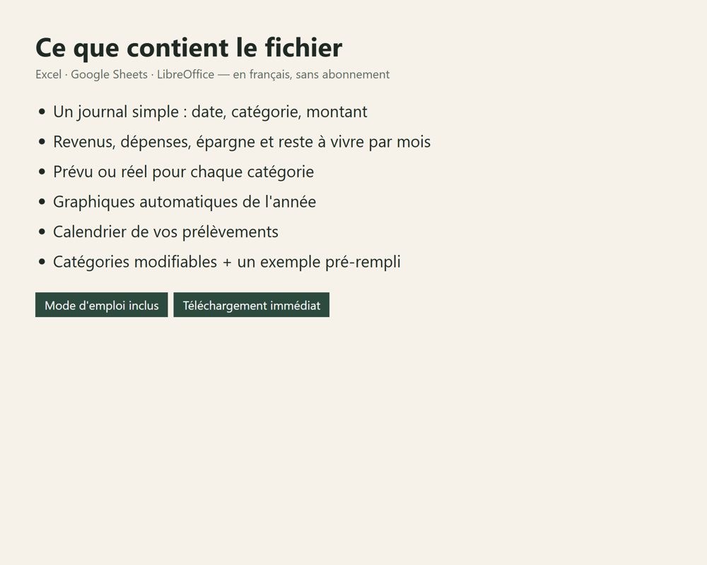

Modèle de budget Excel gratuit, en français
Un budget mensuel simple, prêt à remplir : vous notez vos revenus et vos dépenses dans les cases jaunes, le fichier calcule seul votre reste à vivre, ce qu'il reste en fin de mois et votre taux d'épargne. Compatible Excel, Google Sheets et LibreOffice.
Télécharger le modèle gratuit
Fichier .xlsx (7 Ko), sans inscription, sans e-mail, sans macro.
Télécharger le modèle gratuitCe qu'il contient
- 4 blocs à remplir : revenus, dépenses fixes, dépenses variables, épargne (lignes renommables).
- Un résumé calculé seul : revenus, dépenses, épargne, reste à vivre, reste en fin de mois (en rouge s'il est négatif), taux d'épargne.
Comment le remplir en 4 étapes
- Revenus : notez ce qui arrive vraiment sur le compte chaque mois (salaire net, allocations CAF, autres revenus).
- Dépenses fixes : loyer ou crédit, énergie, internet et téléphone, assurances, transports, abonnements. Prenez vos relevés bancaires du mois dernier.
- Dépenses variables : courses, loisirs, santé, divers. Si vous ne savez pas, mettez une estimation puis corrigez le mois suivant.
- Épargne : le montant que vous mettez de côté. Le résumé affiche alors seul votre reste à vivre, ce qu'il reste en fin de mois (en rouge s'il est négatif) et votre taux d'épargne.
Les noms des lignes se modifient : remplacez « Abonnements » par « Netflix » ou ajoutez une ligne « Cantine » dans les cases jaunes vides.
Deux exemples remplis
Voici ce que donne le modèle pour deux foyers fictifs (montants mensuels arrondis, à remplacer par les vôtres).
| Personne seule | Couple, 1 enfant | |
|---|---|---|
| Revenus | 1 800 € | 3 400 € |
| Loyer ou crédit | 620 € | 950 € |
| Énergie | 70 € | 130 € |
| Internet et téléphone | 35 € | 50 € |
| Assurances | 45 € | 90 € |
| Transports | 75 € | 220 € |
| Abonnements | 30 € | 55 € |
| Total dépenses fixes | 875 € | 1 495 € |
| Courses | 300 € | 650 € |
| Loisirs | 120 € | 200 € |
| Santé | 30 € | 60 € |
| Divers | 80 € | 150 € |
| Total dépenses variables | 530 € | 1 060 € |
| Épargne | 180 € | 340 € |
| Reste à vivre (revenus − fixes) | 925 € | 1 905 € |
| Reste en fin de mois | 215 € | 505 € |
| Taux d'épargne | 10 % | 10 % |
Lecture : la personne seule garde 925 € une fois les charges fixes payées. Après courses, loisirs et 180 € d'épargne, il lui reste 215 € de marge, qu'elle peut ajouter à l'épargne ou garder pour les imprévus. Pour vérifier si votre reste à vivre est suffisant, utilisez le calculateur de reste à vivre.
Gratuit ou complet : lequel choisir ?
| Modèle gratuit | Mon budget 2026 | |
|---|---|---|
| Budget d'un mois | ✓ | ✓ |
| Reste à vivre et taux d'épargne | ✓ | ✓ |
| Journal des dépenses au jour le jour | — | ✓ |
| Les 12 mois calculés seuls | — | ✓ |
| Prévu / réel par catégorie, écarts en rouge | — | ✓ |
| Graphiques de l'année | — | ✓ |
| Calendrier des prélèvements | — | ✓ |
| Exemple pré-rempli + mode d'emploi | — | ✓ |
| Prix | 0 € | 4,50 € |
Le gratuit suffit pour faire le point une fois. Le complet sert à suivre son argent toute l'année sans refaire les calculs.
Aperçu de la version complète



Excel, Google Sheets et LibreOffice · en français · fichier vierge + exemple pré-rempli · téléchargement immédiat après paiement.
Voir Mon budget 2026 — 4,50 €Questions fréquentes
Le modèle est-il vraiment gratuit ?
Oui. Le fichier se télécharge directement, sans inscription ni adresse e-mail. Il n'y a ni macro ni publicité dedans.
Comment l'ouvrir dans Google Sheets ?
Dans Google Sheets, choisissez Fichier puis Importer, envoyez le fichier .xlsx et choisissez « Créer une feuille de calcul ». Les formules continuent de fonctionner.
Quelle différence avec la version complète ?
Le modèle gratuit calcule le budget d'un mois sur une seule feuille. La version complète Mon budget 2026 suit toute l'année à partir d'un journal de dépenses, avec les 12 mois calculés seuls, des graphiques, un prévu / réel par catégorie et un calendrier des prélèvements.
Quelle part de ses revenus faut-il épargner ?
Un repère courant est 10 % des revenus, ou 20 % avec la règle 50/30/20. Mieux vaut un petit montant viré chaque mois dès le jour de la paie qu'un gros montant irrégulier. Le modèle calcule votre taux d'épargne automatiquement.
Que faire si le reste en fin de mois est négatif ?
La case passe en rouge. Commencez par les dépenses variables (courses, loisirs, divers) et par les abonnements, plus faciles à réduire que le loyer. Si les dépenses fixes dépassent à elles seules une grande partie des revenus, le problème vient du reste à vivre, pas des petites dépenses.
Mes données sont-elles envoyées quelque part ?
Non. Le fichier reste sur votre ordinateur ou dans votre propre Google Drive. Rien n'est transmis.
Pour aller plus loin : calculer son reste à vivre, appliquer la règle 50/30/20, faire le tri dans ses abonnements.
Outil d'organisation, pas un conseil financier.